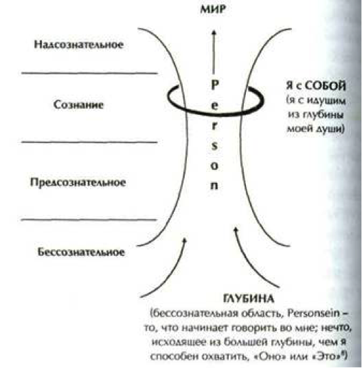

Экзистенциальный анализ (и логотерапия как его составная часть) — это психотерапевтический метод, осуществляемый преимущественно в вербально индуцированном процессе. С точки зрения методик и лежащей в их основе картины человека, — это феноменологическая личностная психотерапия, которая ставит своей целью помощь личности (духовно и эмоционально) свободно и полно проживать свою жизнь, выйти на аутентичные установки и актуализировать личную ответственность по отношению к собственной жизни и к миру. Экзистенциальный анализ применяется при психосоциальных, психосоматических и психически обусловленных эмоциональных и поведенческих нарушениях. (Лэнгле, 1999)
Сам Лэнгле определяет логотерапию как «специальный раздел экзистенциального анализа наиболее близкий Виктору Франклу». Сила логотерапии по мнению Лэнгле заключается в том, что она помогает людям справиться с тяжелыми неустранимыми жизненными ситуациями такими как неизлечимые болезни, потери близких. Основная сфера применения логотерапии — профилактическая работа, воспитание и социальная работа. Лэнгле прямо заявляет о том, что именно экзистенциальный анализ используется как психотерапевтический инструмент, а логотерапия применяется главным образом при консультировании и профилактической работе.
«Таким образом, мы можем сказать, что в экзистенциальном анализе речь идет о „нахождении жизни“, а в логотерапии об осмысленном проживании жизни» (Лэнгле, 1999).
Цель экзистенциального анализа как психотерапии по Лэнгле есть достижение аффирмации с жизнью, т.е. особого рода согласия со своей жизнью (т.е. согласия-подтверждения, согласия-соучастия). Поскольку жизнь всегда происходит только в настоящем времени, исходным пунктом экзистенциального анализа является «актуальное». Однако в центре анализа находится будущее как созидание дальнейшей жизни. Если человек не видит будущего его экзистенция заблокирована.
Поскольку речь идет о самотрансцендирующем, выходящем за собственные пределы свободном начале, дать определение Person невозможно. Однако нам уже ясно, что это — центральное понятие экзистенциального анализа для обозначения духовного измерения человека и его способности к экзистенции. Франкл определял Person как «свободное в человеке» и помещал на противоположный каузально-детерминированному психодинамическому (которое по определению свободным не является) полюс. Духовное может находиться в оппозиции по отношению к психодинамическому: «Person — это то, что говорит „НЕТ“» (М. Шелер). Но это также и то, что занимает позицию и говорит «ДА», добавляет А. Лэнгле, персональное феноменологически проявляется как чувство внутреннего согласия по отношению к своим чувствам, желаниям, поведению. Если Person есть свободное, то ее нельзя удержать, она всегда больше, чем то, что мы о ней знаем или можем о ней сказать (К. Ясперс), и по своей сути она всегда другая. Так как она — свобода, она всегда способна удивлять, быть непредсказуемой и уникальной, ни с чем не сравнимой.
Свобода традиционно считается критерием персонального в человеке, но сегодня — и это смешение акцентов делает уже А. Лэнгле — главное отличие Person — это способность к диалогу. Феноменологически точно о наличии Person можно судить, потому что она говорит мне и во мне. Этот внутренний голос слышал, наверное, каждый как голос совести, голос интуитивного чутья. Эта способность к диалогу является сущностью Person. Она всегда в диалоге с другими или с собой. Можно сказать, что персональное в человеке проявляет себя в том, как он строит этот диалог и строит ли его вообще.
Person — это внутренняя сила, которую мы не можем постичь, или удержать, или создать, она не поддается контролю. Человек перед лицом этой силы переживает невозможность до конца постичь самого себя. Эта глубинная духовная первооснова снова и снова приходит ко мне — адресуется мне. Я лишь окаймление этого, подобно тому как твердая почва окаймляет источник. Эта глубинная Person — одновременно тоже я, это не кто-то другой, кто говорит со мной. Во мне есть внутреннее чувство подразумеваемости: глубина, которая поднимается во мне (как из источника), имеет в виду меня. Чувства, идущие из самой глубины, желания и намерения, которым я говорю «Да», а также соотнесенные с собой предпочтения и работа совести — органа восприятия правильного, — это проявления Person, непостижимой, текущей, поднимающейся из глубины, говорящей. И все это попадает в руки моего Я, я как Person отдан своему Я — тому, кто принимает решения, определяет и действует. Но... еще один парадокс — Я наделено свободой, поэтому оно также свободно игнорировать персональное. Однако лишь тогда, когда мое Я берет на себя ответственность за Person, действует в соответствии с этим, появляется условие экзистенциального существования.

Быть Person означает быть способным проживать свое Я из глубины и тем самым быть Я в полном смысле. Несмотря на то что собственное персональное бытие не находится под контролем человека и он не может им распоряжаться, именно Person предоставляет почву для Я. Поэтому можно утверждать, что Person является основой, фундаментом человеческого Я. «Person» — это то, что Я говорит во мне. (Längle , 1993, 136ff).
Мы переживаем соотношение Я и Person так, как будто в середине Я раскрывается некая глубина , из которой что-то начинает «говорить». Создается впечатление что во всем, что я делаю, говорит Я. Однако не только Я, но также и другое говорит из этой непостижимой глубины и поднимается нам навстречу: чувства, интуитивное чутье, образы, слова . Все это говорит во мне и адресовано мне, всплывая из непостижимости, подступающей ко мне словно грунтовые воды — незаметно, но пропитывая все насквозь. Оно говорит мне и во мне — но и сам я также есть оно . Person относится к тому же классу явлений, что и фундаментальная основа бытия, которая сообщает нам чувство, что нас в жизни что-то поддерживает, что и фундаментальная ценность, которая узнаваема и переживается как ценность нашей собственной жизни. Person представляет собой ту праоснову , из которой Я черпает свою духовную силу.
ПЭА состоит из трех основных шагов, которым предшествует фаза получения информации:
Пациент начинает с рассказа о своих проблемах и о себе. Терапевт, в свою очередь, старается убедиться, что ИНФОРМАЦИЯ пациента достаточно полная, ясная, реалистичная и не содержит противоречий. В процессе описания своих проблем пациент переживает их снова.
Клаудиа считает, что другие люди имеют право говорить все, что они хотят. "Они делают это так непосредственно, что я чувствую себя абсолютно беспомощной«,— говорит она. Тем не менее, если кто-либо выражает по отношению к ней агрессию, то она вполне может постоять за себя и дать отпор. Она говорит, что ее проблема состоит в том, что она чувствует себя «изнасилованной благодаря своему дружелюбию».
После того как Клаудиа изложила свою проблему в целом, ей был задан вопрос о конкретной ситуации, в которой она чувствовала себя «изнасилованной благодаря своему дружелюбию». Ей было несложно рассказать о конкретном случае, который произошел с ней за последние дни, потому что ее мысли постоянно были заняты этим.
Затем более детально исследуется то, что пациент пережил в какой-либо конкретной проблемной ситуации настоящего или прошлого. Для этого важно тщательно рассмотреть то ВПЕЧАТЛЕНИЕ (ПЭА 1), которое оказала ситуация на пациента. Это впечатление состоит из спонтанного реагирования на двух уровнях: на уровне бессознательно возникающей «первичной» эмоции или ощущения и на уровне бессознательно возникающего импульса немедленно совершить какое-то конкретное действие. Это спонтанное реагирование отражает субъективное восприятие пациентом объективных фактов ситуации.
Эльфи — моя подруга, с которой я разговариваю по телефону почти каждый день. Когда я перезваниваю ей, она рассказывает мне массу всякой всячины, а за это время у меня копится все больше и больше работы, которую я не успеваю сделать. Это здорово действует мне на нервы, но у меня не хватает смелости прервать ее.
Т: А чего вам на самом деле хотелось бы ей сказать? Вы можете произнести это спонтанно, не раздумывая?
К: «Я понимаю тебя, Эльфи, но у меня сейчас нет времени разговаривать».
Для лучшего понимания ситуации и того, что происходит с самой Клаудией, терапевт задает вопрос о спонтанном импульсе к действию, который она ощущает (ПЭА 1), но которому, однако, не решается последовать («у меня не хватает смелости»).
На следующем шаге, ПЭА 2, пациент сначала работает над пониманием того, почему в этой ситуации у него спонтанно возникли именно такая эмоция и импульс к совершению именно такого действия. Он старается понять, что объективно представляет собой эта ситуация. Это делается с целью углубления интеграции пережитого в общем контексте прошлой и настоящей жизни пациента. Достигнутое понимание представляет основу для персональной оценки произошедшего с позиций совести пациента и, таким образом, для вынесения суждения о ситуации. Это закладывает прочную основу персональной ПОЗИЦИИ, исходя из которой пациент способен встретиться лицом к лицу с ситуацией, ранее представлявшейся ему весьма проблемной.
Т: Что произойдет, если вы ей это скажете? Как вы думаете, что она почувствует?
К: Она воспримет это как что-то вроде того, что я ее отвергаю. (После некоторых размышлений) Может быть, я должна была сказать: «У меня нет времени сейчас, однако не могли бы мы поговорить позже, скажем, часов в 11 вечера?»
Т: И как это для нее прозвучит?
К: Не слишком оскорбительно.
Для того чтобы показать Клаудии, что именно пугает ее и мешает произнести эту фразу, ей задают вопрос о том, что, по ее мнению, произойдет, если она все-таки скажет это (ПЭА 2).
Персональный процесс работы с «жизненным миром» (Гуссерль) завершается, когда пациент нашел способ ВЫРАЗИТЬ СЕБЯ (ПЭА 3), т. е. определил как-то, что он может и хочет сделать, так и то, когда, как и с помощью каких средств он сможет это реализовать. На этом строится персональное поведение в конкретной ситуации.
Т: Что вам нужно было бы сказать Эльфи, чтобы все поняли, что именно вы хотите ей сказать, и чтобы при этом ваше желание сохранить отношения также было бы выражено? Как вы сможете сформулировать это в приемлемом виде, не используя таких обидных фраз, как «совершенно не ...» и «Ну говори, чего тебе?» Но в то же время объясните мне, как вам удастся избежать подобных фраз, когда по сути дела именно это вы и хотите ей сказать?
К: Я бы хотела видеться с ней один раз в полгода. Этого было бы вполне достаточно.
Т: Я думаю, что сейчас нам не хватает детальной проработки того, как вы теперь будете вести себя в этой ситуации. Например, знаете ли вы, какую внутреннюю позицию займете, когда она позвонит вам и вы станете ей перезванивать? Если нет, мы можем попробовать найти эту позицию вместе.
К: Ну, я должна сказать ей правду. Я просто должна сказать: «Эльфи...» (смеется). Это не так-то просто. (Пауза) Я просто пытаюсь найти что-нибудь не слишком грубое, что-то достаточно сдержанное; что-то, что оставило бы ей возможность, но также оставило бы возможность и мне тоже. Я хочу узнать, чего же она хочет. На самом деле это важный момент: выяснить, в чем состоит ее проблема. И, с другой стороны, я также хочу сказать: «Извини, но у меня сейчас так много работы, что я совсем не могу уделить тебе время». (Затем четким голосом, живо) Если бы она стала рассказывать о чем-то действительно важном, то я внимательно стала бы ее слушать. Но я не хочу слушать о том, что масло растаяло, пока она ходила по магазинам.
Терапевт убеждается, что Клаудиа не пытается уклониться, и просит ее попробовать проговорить подходящую форму обращения к Эльфи. Клаудиа должна пережить эту ситуацию так, как будто она происходит на самом деле, а не утопать в туманных словесных формулировках.
К: Это сложнее, если я должна сказать все так максимально реалистично. Но теперь, я думаю, что я поняла. И, мне кажется, внутри себя я пришла к согласию относительно того, как мне нужно это сказать. Ну, попробую: «Привет, Эльфи! Прошло так мало времени после выходных, а ты уже звонишь. Как это приятно! Но у меня сейчас куча работы и поэтому очень мало времени. У тебя что-нибудь важное?»
Завершение сессии
Для углубления понимания терапевт предлагает проделать небольшую рефлексию.
Т: Что вы думаете о нашей сегодняшней беседе?
К: Я думаю, что она была впечатляющей. Она изменила мое восприятие. Вначале я очень нервничала: «Больше никакой Эльфи!» Но в процессе нашей беседы я каким-то образом примирилась с ней. Я заметила, что если я определяю свои границы, то могу принимать другого человека таким, какой он есть. На самом деле мне нравится Эльфи. Теперь мне не нужно защищаться, не нужно становиться агрессивной или чувствовать себя «маленькой, как мышка». Теперь я снова могу видеть других людей такими, какие они есть, не вступая в борьбу против того, что мне в них не нравится (А. Лэнгле «Терапевтический случай нахождения собственного Я»).
|
ФМ |
Психическое чувство дефицита (ощущаемые затруднения) |
Психическое предостережение |
Психическая угроза (= страх) |
Растущая психическая ригидность (фиксация, невротический уровень) |
Психическое изменение субстрата (нарушения личности). Полная декомпенсация человека (психозы) |
|
1 ФМ |
Неуверенность |
Беспокойство, замкнутость |
Тревожность |
Фундаментальный страх |
Фундаментальный страх переполняет (шизофрения) |
|
2 ФМ |
Напряжение |
Подавленность, потеря витальности |
Связанный с отношениями страх ожидания — страх потери отношений/ утраты бытия-живым |
Депрессия, смирение (покорность судьбе) |
Смирение (покорность судьбе) переполняет (глубокая депрессия) |
|
3 ФМ |
Внутренняя пустота |
Одиночество, обиженность, оскорблённость, отвращение |
Страх ожидания, связанный с самоценностью = страх перед потерей уважения/ потерей социальной интеграции |
Истерия, обиженность |
Переполняет чувство, что за человеком следят (паранойя), переполняет боль (самые частые нарушения личности) |
|
4 ФМ |
Внешнее чувство пустоты, скука |
Сомнения в смысле, смысловая пустота |
Соотнесённый с экзистенцией страх ожидания = страх перед бессмысленностью |
Экзистенциальный вакуум |
Отчаяние при безысходном чувстве бессмысленности (суицидальность) |
«Осознание своей экзистенциальной ситуации»
«Вы должны, произвольно перемещаясь по залу, найти свое место — то, которое комфортно для вашего тела.
Закройте глаза, чтобы лучше почувствовать свое тело. Прислушайтесь к сигналам, которые посылает вам ваше тело, и примите позу, которую оно хочет принять. Позвольте телу принять ту позу, которую оно хочет.
Оставаясь в этой позе, с закрытыми глазами ждите появления чувств, ощущений, образов. После того как появился какой-то достаточно устойчивый образ или чувство, побудьте в этом образе и почувствуйте, что происходит. Если это получилось, вы можете задать себе вопрос: что я сейчас хочу, что мне сейчас нужно?»